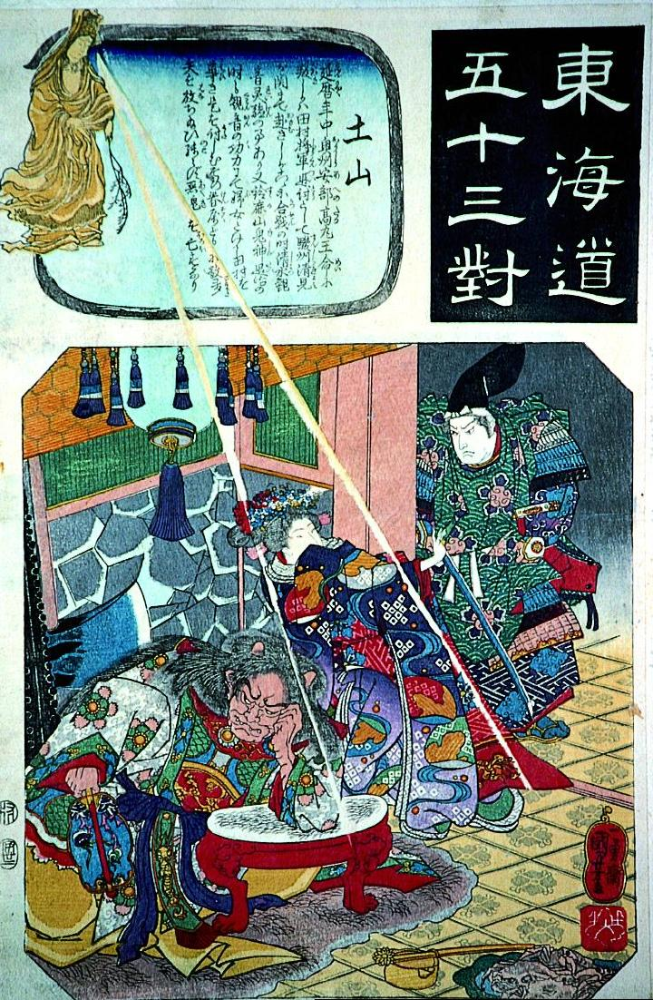

武装した坂上田村麻呂が鈴鹿山の鬼神を退治する場面。観音の化身である女が田村麻呂を導いている。鬼神は軍配を持ち肘掛にもたれかかって寝ているようである。
著作者：歌川国芳／出典：親書誌：A5_pushkin_0012：東海道五十三対 土山；トウカイドウゴウジュウサンツイツチヤマ／日付：2011／資源識別子：A5_pushkin_0012_0001_0000
Copyright (c)2010- International Research Center for Japanese Studies, Kyoto, Japan. All rights reserved.